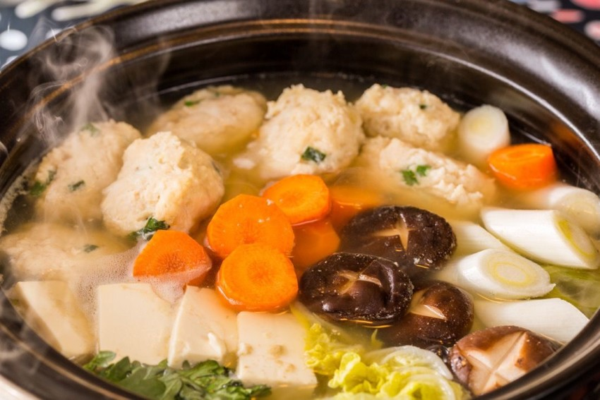

Nabe - A hearty Japanese soup and chicken recipe. Perfect for cold winter evenings

Japan gets cold in winter. VERY cold, especially in the great north of Hokkaido. This hearty, fillinga and relatively healthy soup stock is the perfect way to warm up in winter.
Ingredients
For the stock
- Soy Sauce - Kikkoman is the go-to
- Sugar - brown sugar for the best results
- Grated ginger
- Sesame oil
- Mirin or Sake
- Konbu - Thick seaweed
For the meatballs
- Minced chicken (In japan, you can buy pre-minced and prepared chicken meatballs for nabe. Let's make our own)
- Green onion
- An egg
- Breadcrumbs
- Lemon juice
For the vegetables
- Negi (Green onion)
- Beansprouts
- Cabbage
- Mushrooms - Shitake and Maitake
Extras
- Tofu
- Shirataki (Japanese konyaku noodles)
Preparation
- To make the meatballs, finely dice the white part of a green onion. In a bowl, add minced chicken, egg and a handful of breadcrumbs. Season with salt and pepper and add the diced green onion. Add a splash of lemon juice, mix and knead into meatballs around the size of ping-pong balls.
- To start the stock, soak the seaweed in boiling water for 5 minutes. Add soy sauce, ginger, brown sugar, mirin and a splash of sesame oil.
- To prepare tofu, cut a hole in the packet and drain the water out. Empty the tofu onto a chopping board, and cut once horizontally, and then 4 times to make cubes a couple of centimeters thick.
- Cut all the vegetables into chunks. The trick with nabe is to not cut the veg too small. You want big, thich chunks
- Add the stock to a large pot and bring to the boil. Add the vegetables and boil until cooked through.
- Once the veg is cooked, add the meatballs and boil until the chicken is fully cooked through (Remove one and cut open to check)
- Ladle out portions of the soup with veg into individual bowls.Enjoy with a bowl of rice
- Once all of the meat and veg is finished, the remaining stock can be re-used by adding noodles or rice
Back to home page